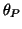
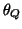
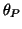
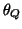

Next: Results
Up: A dynamical model for
Previous: Heart rate variability
The dynamical model
The model generates a trajectory in a three-dimensional state space
with co-ordinates . Quasi-periodicity of the ECG is reflected
by the movement of the trajectory around an attracting limit cycle of
unit radius in the -plane.
Each revolution on this circle corresponds to one RR-interval or heart beat.
Inter-beat variation in the ECG is reproduced using the
motion of the trajectory in the  -direction.
Distinct points on the ECG, such as the P,Q,R,S and T are described by
events corresponding to negative and positive attractors/repellors
in the -direction. These events are placed at fixed angles along the
unit circle given by , ,, and
(see Fig. 2). When the trajectory
approaches one of these events, it is pushed upwards or downwards
away from the limit cycle, and then as it moves away it is pulled back
towards the limit cycle.
The dynamical equations of motion are given by a set of three ordinary
differential equations
-direction.
Distinct points on the ECG, such as the P,Q,R,S and T are described by
events corresponding to negative and positive attractors/repellors
in the -direction. These events are placed at fixed angles along the
unit circle given by , ,, and
(see Fig. 2). When the trajectory
approaches one of these events, it is pushed upwards or downwards
away from the limit cycle, and then as it moves away it is pulled back
towards the limit cycle.
The dynamical equations of motion are given by a set of three ordinary
differential equations
where
,
,
and  is the angular velocity
of the trajectory as it moves around the limit cycle.
Baseline wander was introduced by coupling the baseline value
is the angular velocity
of the trajectory as it moves around the limit cycle.
Baseline wander was introduced by coupling the baseline value  in (1) to the respiratory frequency using
in (1) to the respiratory frequency using
where mV.
These equations of motion given by (1) were integrated
numerically using a fourth order
Runge-Kutta method [15] with a fixed time step
where is the sampling frequency.
Visual analysis of a section of typical ECG from a normal subject
was used to suggest suitable times (and therefore angles )
and values of  and for the PQRST points.
The times and angles are specified relative to
the position of the R-peak as shown in Table I.
A trajectory generated by equation (1) in three-dimensions
corresponding to is illustrated in Fig. 2.
This demonstrates how the
positions of the events act on the trajectory in the
-direction as it precesses around the unit circle in the -plane.
The variable from the three-dimensional system (1)
yields a synthetic ECG with realistic PQRST morphology
(Fig. 3). The similarity between the synthetic
ECG and the real ECG may be seen by comparing Fig. 3
with Fig. 1. Note that noise has not been added
to the model at this point.
and for the PQRST points.
The times and angles are specified relative to
the position of the R-peak as shown in Table I.
A trajectory generated by equation (1) in three-dimensions
corresponding to is illustrated in Fig. 2.
This demonstrates how the
positions of the events act on the trajectory in the
-direction as it precesses around the unit circle in the -plane.
The variable from the three-dimensional system (1)
yields a synthetic ECG with realistic PQRST morphology
(Fig. 3). The similarity between the synthetic
ECG and the real ECG may be seen by comparing Fig. 3
with Fig. 1. Note that noise has not been added
to the model at this point.
Table I:
Parameters of the ECG model given by (1)
| Index (i) |
P |
Q |
R |
S |
T |
| Time (secs) |
-0.2 |
-0.05 |
0 |
0.05 |
0.3 |
| (radians) |
|
|
0 |
|
|
|
1.2 |
-5.0 |
30.0 |
-7.5 |
0.75 |
|
0.25 |
0.1 |
0.1 |
0.1 |
0.4 |
Figure 2:
A typical trajectory generated by the dynamical model
(1) in the three-dimensional space given by . The dashed
line reflects the limit cycle of unit radius while the small circles show the
positions of the P,Q,R,S,T events.
|
Figure 3:
Morphology of one PQRST-complex of the ECG.
|
By contrasting the dynamical model (1) with the mechanisms
underlying the cardiac cycle, it is obvious that the time required to
complete one lap of the limit cycle is equal to the RR-interval
of the synthetic ECG signal. Variations in the length of the RR-intervals
can be incorporated by varying the angular velocity .
The effects of both RSA and Mayer waves in the power spectrum
 of the RR-intervals are incorporated
by generating RR-intervals which have a bimodal power spectrum
consisting of the sum of two Gaussian distributions,
of the RR-intervals are incorporated
by generating RR-intervals which have a bimodal power spectrum
consisting of the sum of two Gaussian distributions,
with means and standard
deviations . Power in the LF and HF bands are given by
and respectively whereas the variance
equals the total area
,
yielding an LF/HF ratio of
 .
Fig. 4 shows the power spectrum given
by ,
, , and
.
Fig. 4 shows the power spectrum given
by ,
, , and
 .
The Gaussian frequency distribution is motivated by the
typical power spectrum of a real RR tachogram [7].
.
The Gaussian frequency distribution is motivated by the
typical power spectrum of a real RR tachogram [7].
Figure 4:
Power spectrum of the RR-interval process
with a LF/HF ratio of
 .
.
|
A RR-interval time series with power spectrum is generated by
taking the inverse Fourier transform of a sequence of complex numbers with
amplitudes and phases which are randomly
distributed between 0 and .
By multiplying this time series by an appropriate
scaling constant and adding an offset value, the resulting time series can be
given any required mean and standard deviation.
Suppose that represents the time series generated by the RR-process
with power spectrum . The time-dependent
angular velocity  of motion around the limit cycle is then given
by
of motion around the limit cycle is then given
by
In this way the series of RR-intervals of the resultant
synthetic ECG will also have a power spectrum equal to ; this will be
demonstrated in the next section.
Next: Results
Up: A dynamical model for
Previous: Heart rate variability
2003-10-08